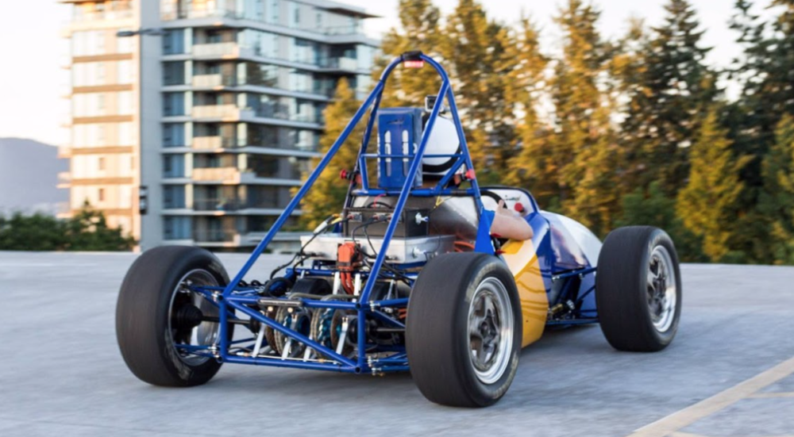
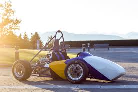
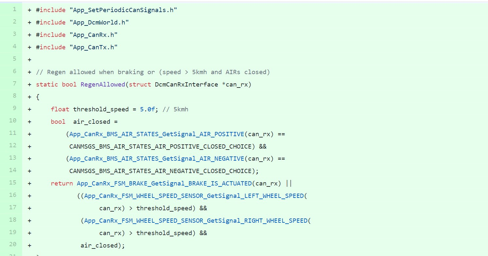

UBC Formula Electric
During the past semester I've been pretty involved with the University of British Columbia's Formula Electric Team, helping develop the electrical side of the racecar. It's an excellent team and I've learned a lot. A link to the design team's site can be found here, and here are some pictures of the car itself: 
I first joined the firmware team, and started writing C code for the STM32 microcontrollers which control the board. There are at least 8 PCB boards (I lost count now), and each has a STM32 microcontroller performing all the main functionality.
My Role in Software
The microcontrollers run a real-time operating system (FreeRTOS), and use a state machine architecture to allow for multiple tasks to be executed at once. My role was writing firmware for the DCM (Drive Control Module), which was responsible for reading in signals from the accelerator pedal and sending torque requests over CAN to the inverter, which in turn controlled the induction motors. This code was written in C and used HAL (Hardware Abstraction Library) to communicate with the GPIO pins. To configure the microcontroller I used the STMCubeMX IDE, along with CLion for development.
To see the code I wrote, check out my fork of the repository here. And to see some real time collaboration work (aka my code being torn apart by people who know much more) click
Collaboration
The firmware team has about 5 people. Collaboration is done using the Git forking workflow, and pull requests are vigorously torn apart by all members of the team (to see an instance of this look at the pull request I made here)My Role in Hardware
Lately I've also became involved with developing hardware for the board, and redesigning the PCB (boards are done in Altium). Currently I am working on swapping the current microcontroller for a more powerful one, and adding another CAN bus for direct communciation with the inverter. Here's what the PCB looks like right now: